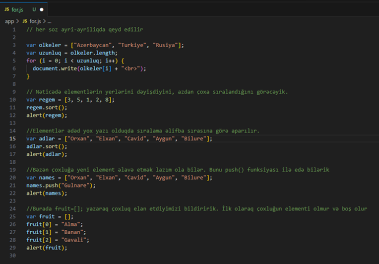

For elementi
For operatorundan istifadə edərək elementləri sayı nə qədər olursa olsun, onları tək-tək çap edə və fərqli vəziyyətlərdə istədiyimiz şəkildə istifadə edə bilərik. Aşağıdakı nümunəyə baxaq:

Burada çap etmək üçün olkeler[i] yazırıq. Beləliklə, hər dövrdə i dəyişəni uyğun rəqəmlə əvəzlənir və çoxluğun uyğun qiyməti çap olunmuş olur.
Nəticədə elementlərin yerlərini dəyişdiyini, azdan çoxa sıralandığını görəcəyik.
Elementlər ədəd yox yazı olduqda sıralama əlifba sırasına görə aparılır.
Bəzən çoxluğa yeni element əlavə etmək lazım ola bilər. Bunu push() funksiyası ilə edə bilərik
Eyni zamanda qeyd edək ki, Javascriptdə çoxluq yaradarkən onun element sayını əvvəlcədən bilməsək belə yarada bilərik.